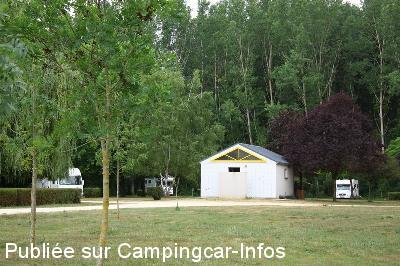
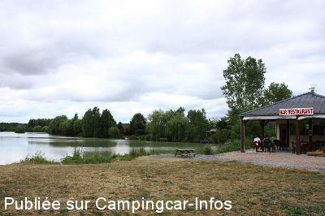
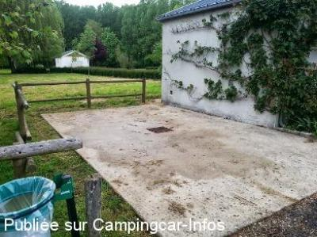
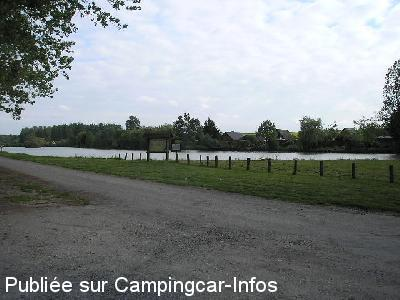

ASN = Aire de services avec stationnement nuit possible de :
SAINT GEORGES SUR ARNON
(N° 784)
Accès/adresse :
Rue de la Vallée
36100 SAINT GEORGES SUR ARNON
36100 SAINT GEORGES SUR ARNON
Latitude : (Nord) 46.99999° Décimaux ou 46° 59′ 59′′
Longitude : (Est) 2.09868° Décimaux ou 2° 5′ 55′′
Tarif : Gratuit
Type de borne : Artisanale
Services :


Autres informations :
Au bord de l'étang de Presles.
http://www.berryprovince.com/dormir-et-reserver/vous-recherchez-un-hebergement/borne-de-camping-car-saint-georges-sur-arnon

Le 08/08/2015 par Benwa

Le 08/08/2015 par

Le 28/05/2013 par yvesobene

Le 15/05/2012 par Rickette
de
Benwa
le 08/08/2015 :
Aire gratuite bien sympatique avec eau et électricité (gratuit), à la campagne, au bord d'un étang.
Ancien camping réaménagé en aire CC, avec toilettes (Douches non fonctionnelles)
Aire gratuite bien sympatique avec eau et électricité (gratuit), à la campagne, au bord d'un étang.
Ancien camping réaménagé en aire CC, avec toilettes (Douches non fonctionnelles)
de
Rickette
le 15/05/2012 :
Nous avons passé la nuit du 11/05 sur le parking de l'air de jeux, à une centaine de mètre de l'aire. Lieu très calme et très sympatique avec beau point de vue sur l'eau.
Nous avons passé la nuit du 11/05 sur le parking de l'air de jeux, à une centaine de mètre de l'aire. Lieu très calme et très sympatique avec beau point de vue sur l'eau.
de
Daniel Blandin
le 30/07/2011 :
Nous sommes le 29 juillet 2011, Les guides camping-car mentionnent tous cet endroit ... Il faut avouer que nous sommes étonnés par la beauté et la paisibilité de l'endroit ... Oui, le camping est fermé, et il y a de l'eau au robinet ... Nous sommes de l'isère en route vers Blois,puis l'Anjou et la Bretagne ... cet endroit est sympa et certainement magique pour les pêcheurs ...
C'est en recherchant un site expliquant ce bel endroit que je suis tombé par hasard sur ce site ... car j'ai pour habitude d'expédier à notre famille tous les endroits ou nous dormons (sécurité)
Nous sommes le 29 juillet 2011, Les guides camping-car mentionnent tous cet endroit ... Il faut avouer que nous sommes étonnés par la beauté et la paisibilité de l'endroit ... Oui, le camping est fermé, et il y a de l'eau au robinet ... Nous sommes de l'isère en route vers Blois,puis l'Anjou et la Bretagne ... cet endroit est sympa et certainement magique pour les pêcheurs ...
C'est en recherchant un site expliquant ce bel endroit que je suis tombé par hasard sur ce site ... car j'ai pour habitude d'expédier à notre famille tous les endroits ou nous dormons (sécurité)